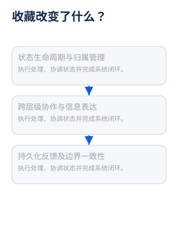
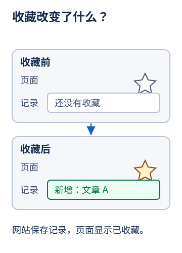
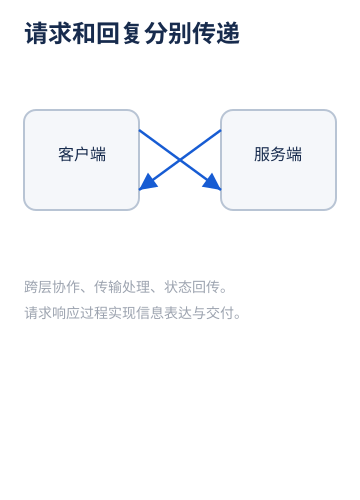
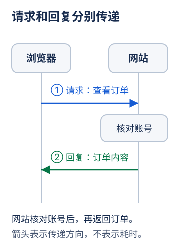
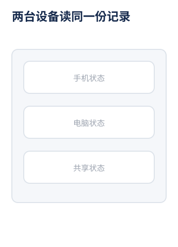
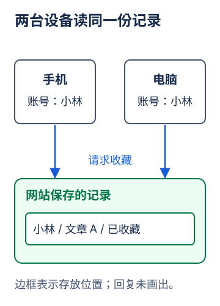
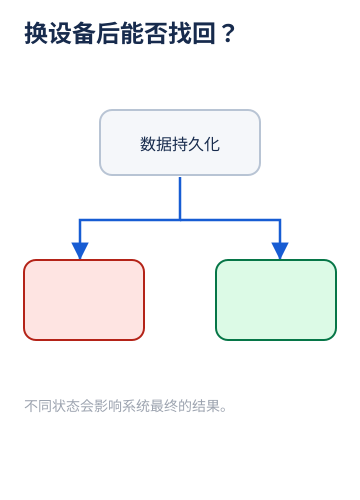
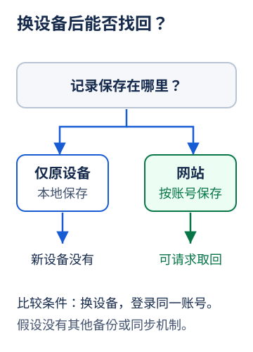

四种可复用图型，把“发生了什么”画出来。每组使用同一问题，对照文字堆叠与机制表达。示例均为虚构教学情境。
收藏前没有记录、星星未亮；收藏后增加文章记录，星星亮起。

两段定义被装进方框，看不到收藏前后的记录变化。

同样的位置呈现同样的对象；新增记录与星标变化一一对应。
浏览器向网站请求订单；网站核对账号后，把订单回复给浏览器。

箭头没有标注传递内容，交叉线和大段文字遮住过程。

两条箭头分别标明请求和回复，接收对象与先后顺序可见。
手机和电脑使用同一账号向网站请求收藏；网站保管一份账号收藏记录。

多个重复盒子混在一起，无法判断记录是共享还是复制。

设备分开，记录集中；边框明确表示记录存放位置。
只在原设备保存的记录不能由新设备直接取得；网站按账号保存时，新设备可请求取回。

颜色承担全部分类含义，分支没有条件或结果说明。

固定换设备和同一账号的条件，再比较两种保存位置的结果。